MongoDB
Mikel Egaña Aranguren
mikel-egana-aranguren.github.io

Mikel Egaña Aranguren
Mikel Egaña Aranguren
mikel-egana-aranguren.github.io
https://github.com/mikel-egana-aranguren/ABD

Dokumentuetan oinarritutako DBKS
Bere izena Humongous (“erraldoi”) hitzetik dator

Dokumentu bakoitza JSON (JavaScript Object Notation) formatuan gordetzen da: barnean Binary JSON (BSON) formatuan
Datu bakoitza gako:balio moduan gordetzen da
Balio bat beste dokumentu bat izan daiteke
Balio bat beste dokumentuen zerrenda bat izan daiteke
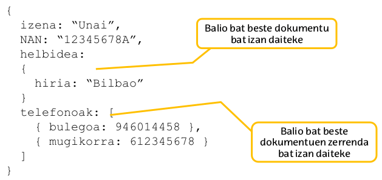
Sistema erlazionalarekiko antzekotasuna:
Ezberdintasun nagusiak:
> cls
> show dbs
> db
> use DB-izena
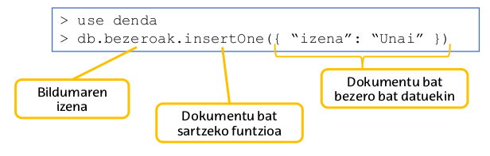
Dokumentu bakoitzak identifikadore bakarra du (Sortzen denean automatikoki esleitzen da, baina eskuz adierazi daiteke)
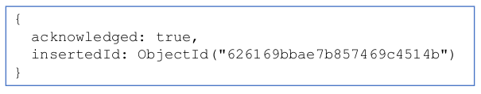
Dokumentua anitzak bilduma batean sartu:
> db.[bilduma].insertMany( [array-docs] )
> db.[bilduma].find()
> db.[bilduma].find([patroia])
> db.[bilduma].findOne([patroia])
> db.bezeroak.find( { izena: "Unai" } )> db.bezeroak.find( { izena: "Unai", NAN: 12345 } )> db.bezeroak.find( { NAN: { $gt: 30000 } } )> db.bezeroak.find( { izena: /M./ } ){ erakustekoZelaia: 1, ezErakustekoZelaia: 0}> db.bezeroak.find( {} , {NAN: 1, _id: 0})> db.[bilduma].deleteOne([patroia])
> db.[bilduma].deleteMany([patroia])
> db.[bilduma].deleteMany( {} )> db.[bilduma].updateMany([patroia], {$set: [aldaketak]})> db.bezeroak.updateMany({ NAN: 22233 }, {$set:{ izena: "Nagore" } })> db.[bilduma].replaceOne([patroia], [dok-berria] )
> show collections
> db.[bilduma].drop()
> db.dropDatabase()
Dokumentu batek txertatuko dokumentuak edo zerrendak eduki ditzazke
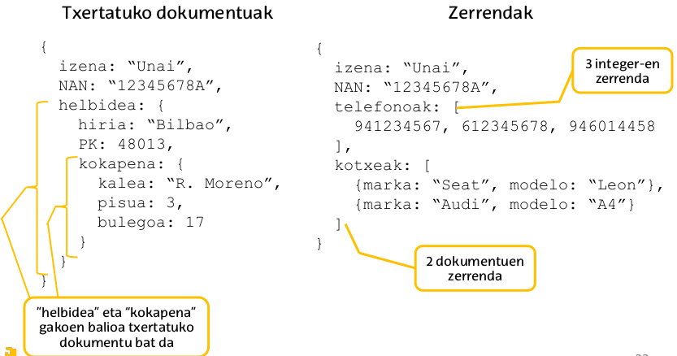
Normalean:
MongoDB-n ez dago teknika konkreturik bildumen arteko erlazioak adierazteko: Eskuz sortu beharko ditugu
Txertatuako dokumentuak
Zelai batzuk erabili erreferentzia bezala
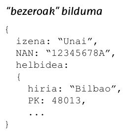
Errepikatzen ez diren datuentzako aproposa
(+) Datuak logikoki multzokatzen dira
(-) Bikoiztasunak sortu daitezke
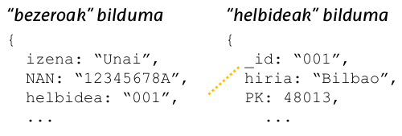
Aproposa hainbat bildumetan erreferenziatzen diren datuentzat
(+) Ez dago datuen bikoiztasunik
(-) Kudeaketa konplexuagoa
(-) Agregazio operazioak erabili behar dira erlazionatutako datuak lortzeko
1 - N datuen arteko erlazioa: bezero batek hainbat helbide izan ditzake, helbide bat soilik bezero batena da
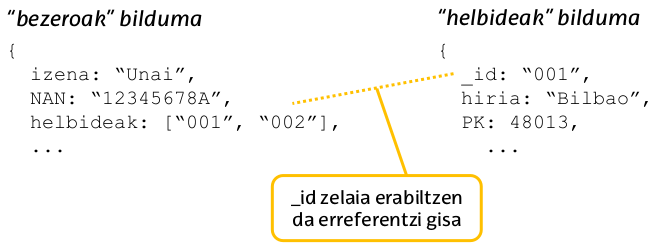
N - N datuen arteko erlazioa: bezero batek hainbat produktu erosi ditzake, produktu bat hainbat bezerok erosi dezakete
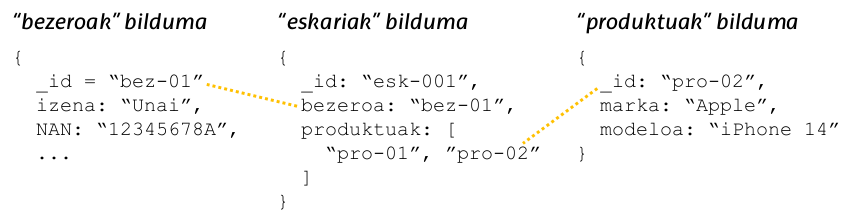
Txertatutako dokumentuak:
Erreferentziak
Bilduma desberdinetako datuak konbinatu daitezke agregazio operazioarekin ("Join")

Adibidea: Eskarien eta eskariak egin dituzten bezeroen datuak konbinatzen duen datu egitura bat sortu
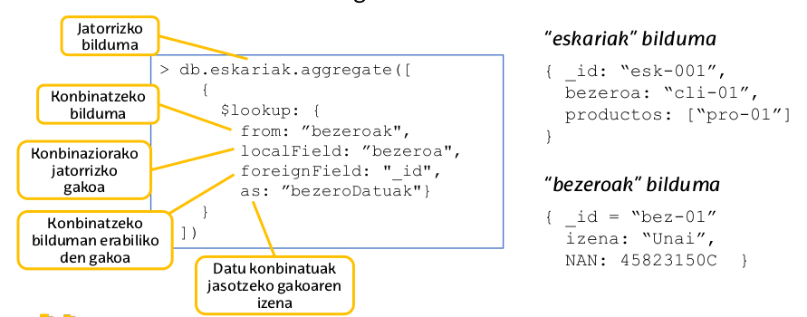
MongoDB-n datuak kudeatu daitezke inolako datu egitura ezarri gabe
Baina egoera batzuetan datuen kontrol automatiko bat ezartzea aproposa izan daiteke: Adibidez, “produktuak” bilduma bateko dokumentu guztiek zenbaki den “prezioa” gako bat edukitzeko
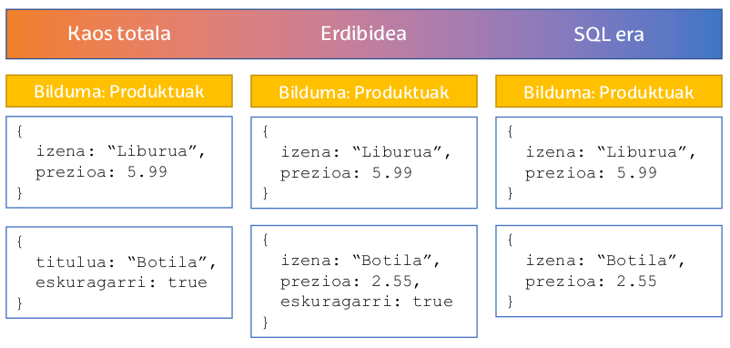
Bilduma bateko dokumentuek bete behar duten egitura definitu daiteke
Eskema batek bilduman sortu nahi den dokumentu bakoitza egiaztatzen du
validationLevel: balidazioaren zorroztasuna kontrolatzen du
validationAction: Dokumentu batek eskema betetzen ez duenean zer egin adierazten du
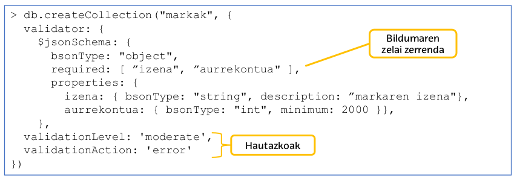
Bilduma baten eskema erakutsi:
> db.getCollectionInfos({name: "markak"})
Bilduma baten eskema aldatu:

validationAction “warn” bada, abisua MongoDB-ko log fitxategian idazten da (Onetsia /var/log/mongodb/mongod.log)
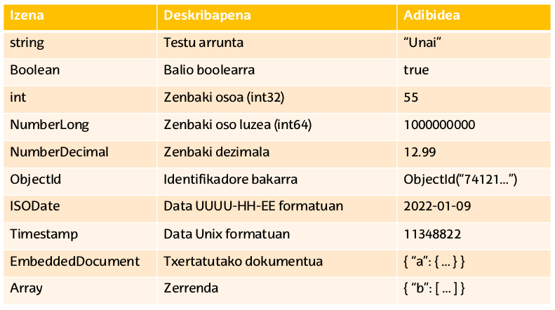